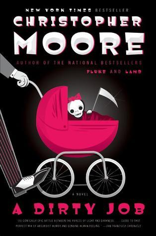

"A Dirty Job"
- Read on 2023-09-29
- Rating: ️️️️️
- Format: 🎧 (11 hours 50 minutes)
I read this for a book club. The not-alpha-but-beta male protagonist finds himself in an unsuspected role of Death, and works through his role with learned proficiency, obvious wit, and handling interpersonal struggles... while the forces of darker darkness attempt to take him down. The story was engaging, and entertaining. It wasn't was I suspected it would be (based on who chose the book), but I enjoyed it.
I had some qualms with the book. I would have made some editorial changes to the flow of the content. And I thought some of it was excessively graphic. And lastly, I felt like the prolific use of f-bombs was actually out of character for the characters. They were so witty and creative in a variety of ways that their general lack of creativity in their language felt off to me.
"Moo poo" as a substitute for a more graphic phrase is top-notch, and straight from this book. During multiple parts I laughed out loud. But this won't be on my short list to either suggest or read subsequent books from the series.
- Prior: Fugitive Telemetry
- Next: The Gifts of Imperfection